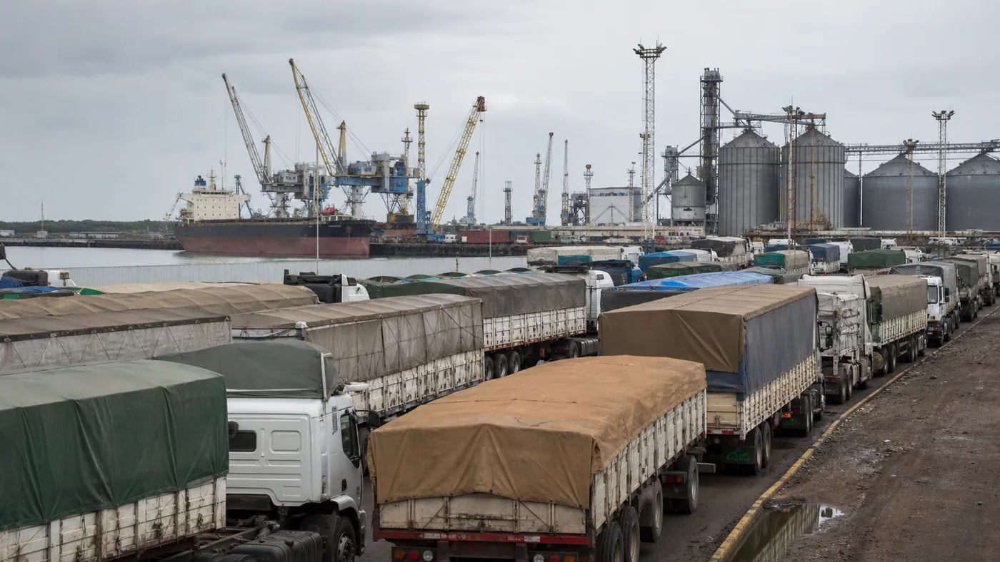

La logística agroexportadora argentina mostró el 26 de agosto dos escenarios completamente distintos. En el cordón industrial del Gran Rosario, las terminales recibieron 11.473 camiones cerealeros durante una jornada de intensa actividad. En Bahía Blanca, un conflicto operativo extendió las esperas y dejó a cientos de unidades sin poder completar la descarga en los tiempos habituales.
La comparación importa porque no se trata solamente de una estadística portuaria. Detrás de cada demora hay horas de conducción, combustible, turnos perdidos, alimentación, descanso y mantenimiento. Cuando un puerto pierde fluidez, el costo se distribuye por toda la cadena: transportista, dador de carga, acopio, terminal, buque y exportador.
El Gran Rosario sostuvo un flujo excepcional
Según la información difundida por TN Campo, Puerto General San Martín encabezó el movimiento con 4.198 unidades. San Lorenzo recibió 3.973 y Timbúes otras 3.302. La suma alcanzó 11.473 camiones, una concentración que exige coordinación entre playas, balanzas, cupos, accesos y terminales.
El volumen no significa que todos los vehículos hayan llegado al mismo establecimiento ni que la circulación haya estado libre de dificultades. Sí señala que el sistema pudo absorber un caudal elevado sin registrar el bloqueo que, en paralelo, afectaba al nodo bonaerense. Para lograrlo son fundamentales la asignación ordenada de cupos y la información anticipada al transportista.
La Bolsa de Comercio de Rosario mantiene una posición diaria de camiones por producto y terminal. Esa herramienta permite observar la presión logística antes de iniciar el viaje. En plena campaña, conocer el cupo y la playa asignada es tan importante como revisar documentación, combustible y estado general del equipo.
Bahía Blanca: esperas que duplicaron el tiempo operativo
En Bahía Blanca, la negativa a realizar horas extraordinarias dentro de un conflicto entre URGARA y empresas portuarias redujo la capacidad de recepción. TN informó inicialmente más de 400 camiones varados. Una actualización posterior de LA NACION elevó el número por encima de 500 y señaló siete buques demorados.
La Cámara de Puertos Privados Comerciales indicó que una operación completa que normalmente requería alrededor de 12 horas estaba demandando cerca de 26. Además, durante esa semana se esperaba el arribo de aproximadamente 10.000 camiones. La combinación de menor capacidad y alta demanda explica la rápida acumulación en accesos y playas.

Qué significa para un transportista
Una espera prolongada cambia la economía del viaje. El vehículo permanece inmovilizado, pero continúan los costos financieros, salariales y de oportunidad. También se altera la programación de los recorridos siguientes y puede quedar desfasado el mantenimiento preventivo de una unidad que debía regresar al taller.
El ralentí innecesario aumenta consumo y horas de motor. La permanencia en banquinas o zonas no preparadas eleva riesgos viales y personales. Por eso, ante una terminal congestionada, la prioridad debe ser confirmar instrucciones con el dador de carga y evitar avanzar hacia el puerto sin cupo o indicación clara.
Cómo prepararse ante una demora portuaria
- Confirmar cupo y terminal: verificar la asignación antes de salir y nuevamente al acercarse al corredor.
- Consultar fuentes oficiales: revisar información de la terminal, autoridades viales y posición de camiones.
- Planificar autonomía: combustible, agua, alimentación, abrigo y medicación deben contemplar posibles esperas.
- Revisar el equipo: neumáticos, luces, frenos, refrigeración y sistema eléctrico tienen que llegar en condiciones.
- Respetar descansos: una demora no debe convertirse en conducción fatigada cuando finalmente se habilita el ingreso.
- No ocupar banquinas inseguras: seguir los lugares de espera indicados y las instrucciones de tránsito.
Una señal sobre la infraestructura logística
El contraste entre Rosario y Bahía Blanca demuestra que la cantidad de camiones es solo una parte del problema. La capacidad real surge de la coordinación entre rutas, accesos, playas, personal, balanzas, elevadores y buques. Si uno de esos componentes se detiene, la fila crece aunque el resto funcione.
Para las flotas, esta realidad refuerza el valor de la información en tiempo real y de un mantenimiento que contemple jornadas imprevisibles. Un camión detenido por una cuestión externa no debe sumar una falla evitable cuando vuelva a circular. Baterías, sistema de aire, refrigeración y neumáticos merecen especial atención en operaciones con muchas horas de espera.
Situación dinámica
Las cifras citadas corresponden a publicaciones del 26 de agosto de 2026 y pueden cambiar con rapidez. Antes de iniciar un viaje, el transportista debe consultar el estado actualizado de la terminal y los accesos. Esta nota explica el episodio y sus efectos, pero no reemplaza la información operativa oficial.